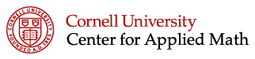
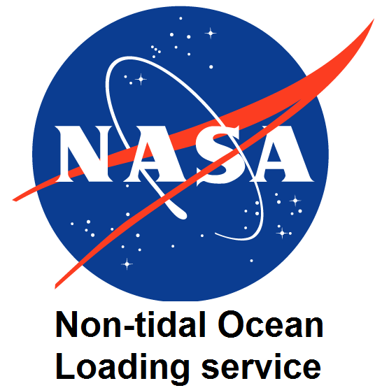
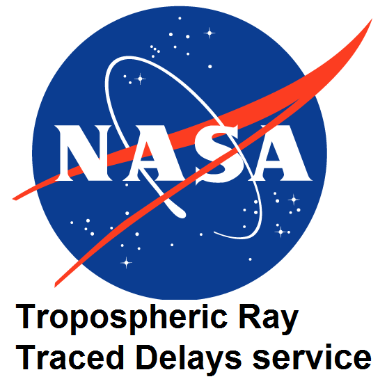
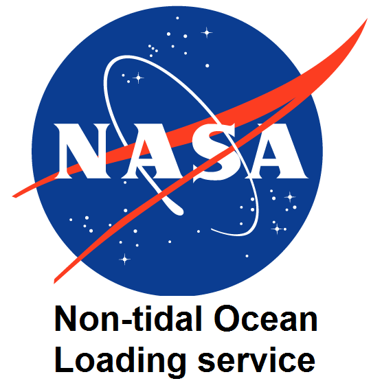
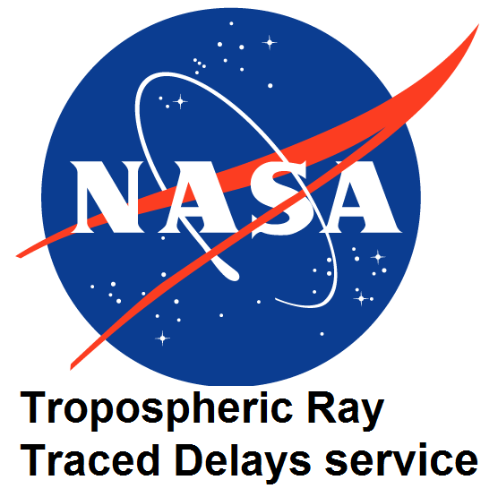

David Eriksson
PhD Student
Center for Applied Mathematics
Cornell University
657 Frank H.T. Rhodes Hall
Ithaca, NY 14850
dme65@cornell.edu
Currently teaching: CS 6210
Office hours: F 1:00-3:00 in 657 Rhodes Hall, Room 1
I am a third-year Ph.D. student in the Center for Applied Mathematics at Cornell University. I'm advised by Professor David Bindel. I'm interested in Surrogate Optimization, Scientific Computing, Numerical Linear Algebra, High-Performance Computing, Machine Learning, and Computational Geometry. I have a Bachelor of Science in Mathematics and a Master of Science in Engineering Mathematics and Computational Science from Chalmers University of Technology, located in Gothenburg, Sweden.
Other Links

 


